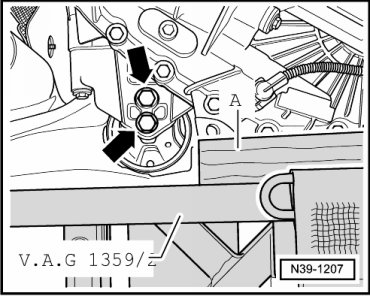
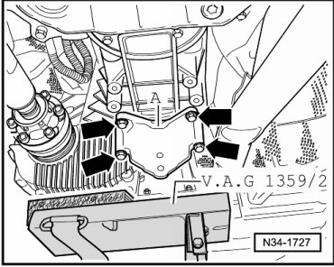
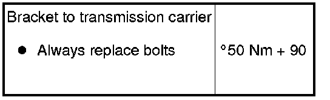
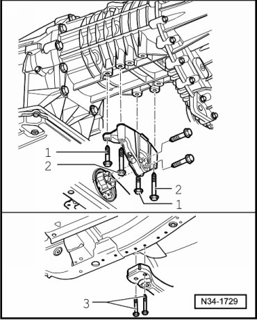
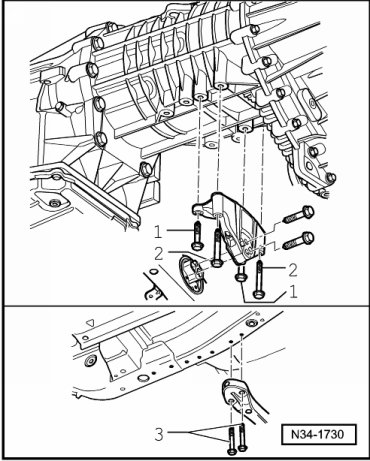
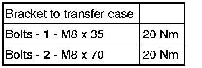
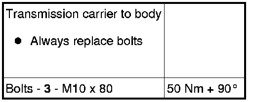

Transmission Carrier and Bracket
Transmission Carrier and Bracket
Special tools, testers and auxiliary items required
• Torque wrench (VAG 1331)
• Torque wrench (VAG 1332)
• Engine and transmission jack (VAG 1383 A) with universal transmission adapter (VAG 1359/2)
Removing
- Raise vehicle.
- Remove noise insulation on bottom of transmission. Refer to --> Body Exterior. Body and Frame
- If an underbody impact guard is located beneath transmission carrier and bracket, remove it.
- Place the engine and transmission jack (VAG 1383 A) with universal adapter (VAG 1359/2) and a block of wood - A - under transfer case.

Do not loosen bolts - arrows - yet.
- Remove transmission carrier bolts - A - from structure - arrows -.

- Lower transfer case slightly, until transmission carrier hangs freely.
- Then, remove transmission carrier from transfer case bracket bolts - arrows -.
- Remove transfer case bracket bolts - arrows - and remove the bracket - A -.

Installing
Installation is performed in the reverse order of removal.
Tightening Specifications

Due to the various engine variations and differing lengths of the transfer case extension, there are various brackets and transmission carriers. Allocation depends on the engine installed.
The various options result in the following fastening points for the bracket to transfer case and transmission carrier to structure:
With 6 and 8 Cylinder Engines

Bracket to transmission carrier.


With 10 Cylinder Engine

Bracket to transmission carrier.


- If an underbody impact guard is located beneath transmission carrier and bracket, install it.